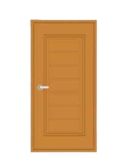
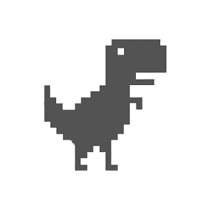

Bem-vindo à Lógica Digital!
Clique em um dos tópicos acima para começar a sua jornada no mundo da lógica digital.
O que é lógica?
Lógica é o jeito formal de pensar com clareza. Ela nos ajuda a tirar conclusões certas, usando regras fixas. No mundo digital, ela vira 0 e 1, desligado ou ligado, falso ou verdadeiro.
- Usa regras para saber se algo é verdadeiro ou falso.
- É a base de todos os circuitos digitais.
- Exemplo: o robô só age se receber carinho OU biscoito.
Experimente com o Robô Preguiçoso
Este robô só obedece a comandos lógicos simples:
🔍 Dica: Ele só vai buscar o brinquedo se receber carinho OU biscoito (pelo menos um dos dois). Caso contrário, continua dormindo!
🤖 Está esperando...
Variáveis Lógicas
Variáveis lógicas são símbolos simples que representam informações verdadeiras ou falsas. Só têm dois estados possíveis: 0 (falso) ou 1 (verdadeiro). Elas controlam o que acontece em um sistema lógico.
- Sempre binárias: 0 ou 1.
- Usadas para condições e decisões.
- Exemplo: a porta só abre se senha E digital estiverem corretas.
Porta Digital
Marque as condições abaixo para tentar abrir a porta:
Portas Lógicas
Aprenda como funciona a lógica com alguns jogos!
Como isso é aplicado no dia a dia?
A lógica digital aparece em objetos do cotidiano. Sempre que algo funciona com base em condições (como "se isso, então aquilo"), há lógica digital envolvida.
-
Interruptores (OR)
Os interruptores da sua casa são exemplos de operações lógicas OR.
-
Controle de Videogame (OR)
Em jogos, o personagem pode pular ou correr com diferentes botões.
 -
Lâmpada (AND)
Lâmpadas que exigem dois interruptores ativos simultaneamente.
